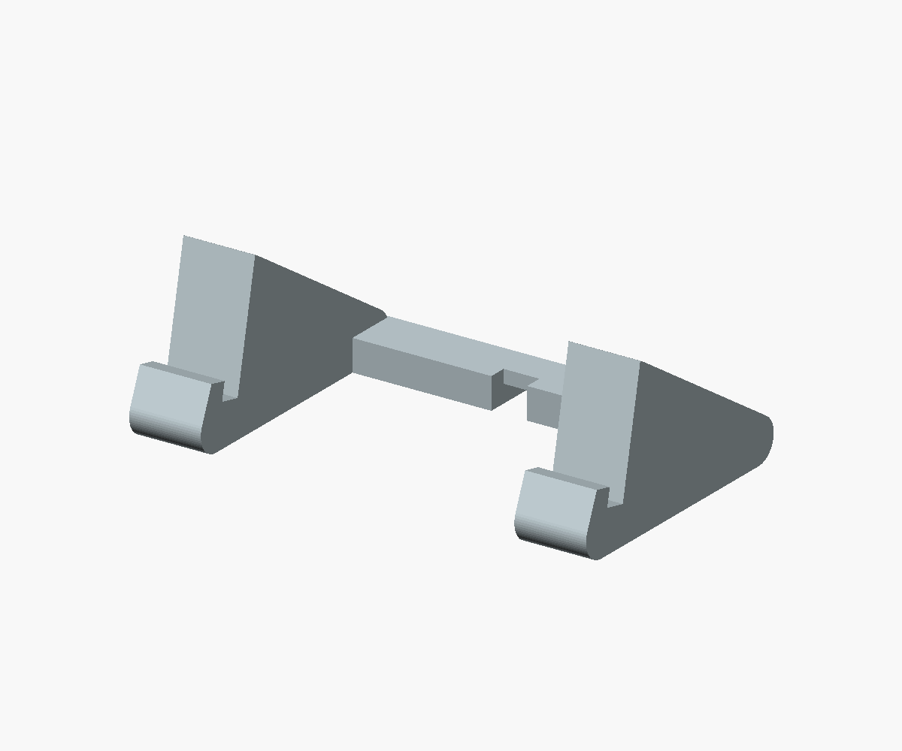
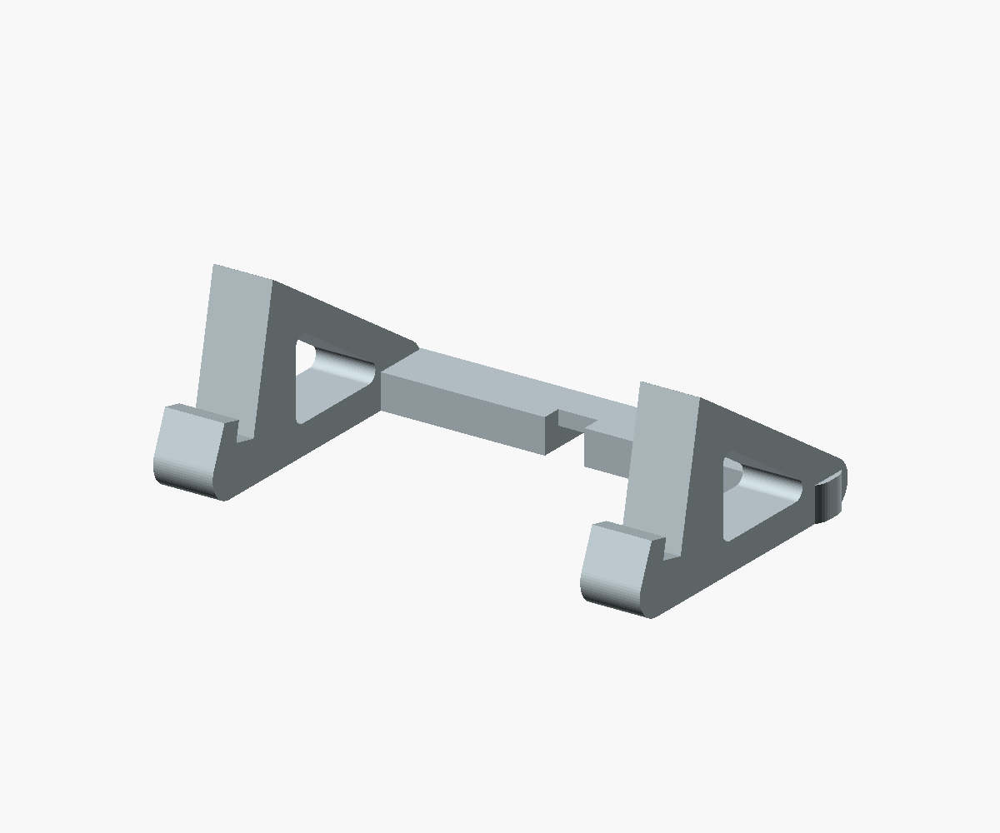
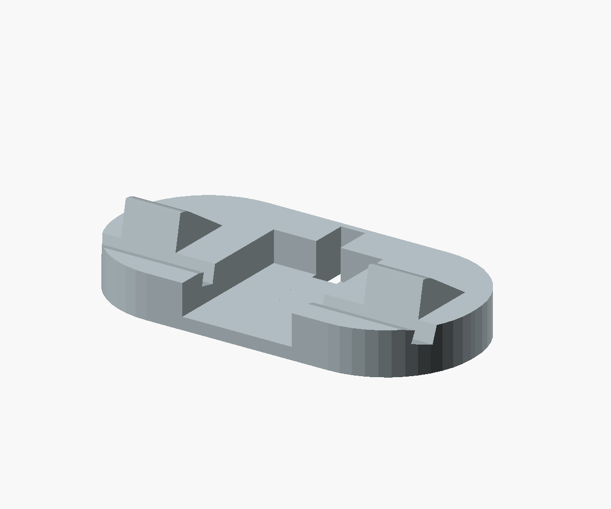
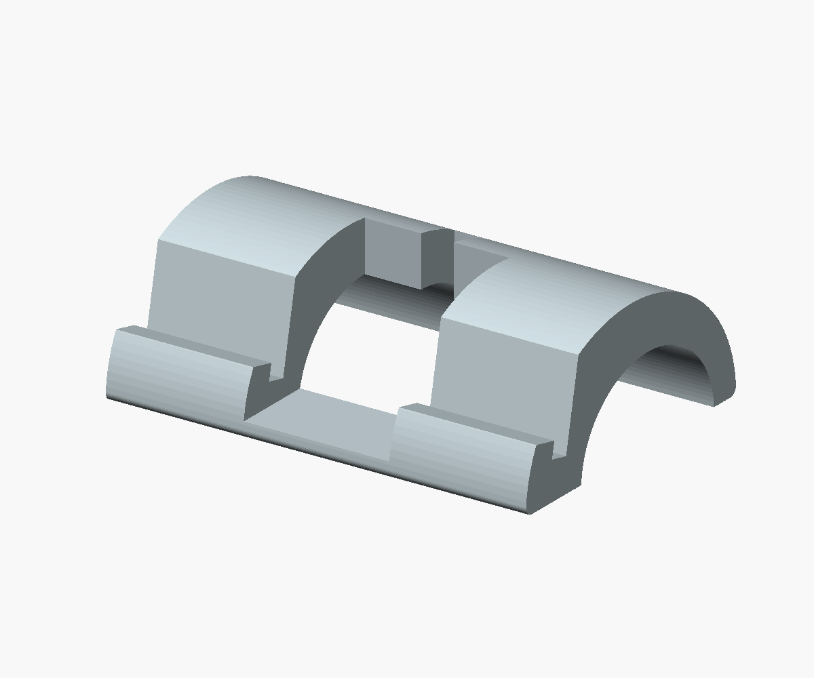
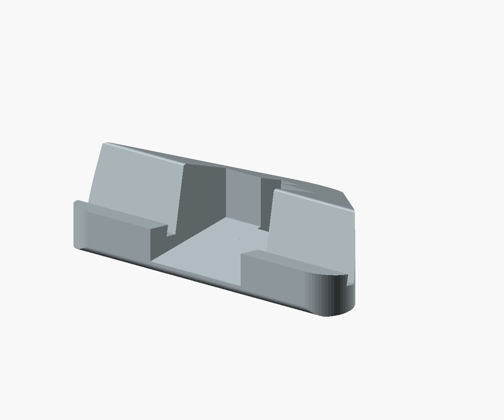
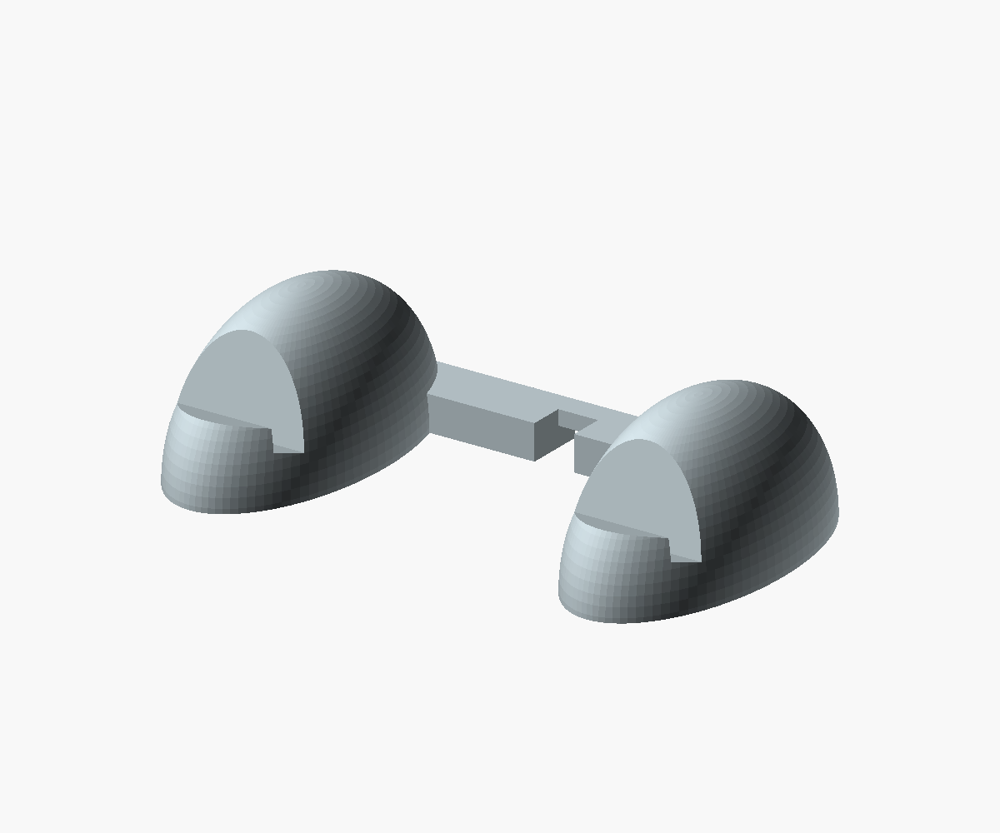

08 / Soft delta
Compact triangular feet with softened corners. My first pick for a simple, understated stand.
Six new directions. Rounded triangles, open frames, and simple sculpted forms. Same screen angle and cable route so the silhouettes are easy to compare.

Compact triangular feet with softened corners. My first pick for a simple, understated stand.

The rounded triangle reduced to a frame. Small windows lighten the silhouette; full supports remain behind the screen.

A broad oval base with two shallow saddles. Quiet from the front, with a continuous rounded outline.

A single broad arch with open space underneath. The strongest architectural silhouette in this set.

Wide at the screen, narrowing to one rounded rear tip. A compact-looking alternative to the half-drum.

Two smooth oval forms joined at the back. Softer and more playful, with very little visible from the front.
Dimensions are approximate footprints. All six retain the 12° lean and provisional slot fit. The original half-drum is unchanged. These are concept models; actual PCB contact points, clearance and stability still need a physical check.